LaserCube Academy · Intermediate
Laser mapping with LaserOS
Six short lessons on outlining a real object with laser lines, such as a stack of boxes, a sign or a feature on a wall: setting up within the manual’s rules, tracing in Draw on a computer or a phone, lines that grow along the edges in Beam Creator, effects and flicker, a safety zone for the target area, and playing your mapping. Pass the final quiz and download your certificate.
Course contents0 of 6 lessons done
The questions, the final quiz and the certificate need JavaScript. Without it you can still read every lesson below.
Before you start
How this course works
Laser mapping means lining up laser lines with the edges of a real object, so the object is outlined in light. This course shows how to do it with LaserOS on a computer or a phone, using its Draw and Beam Creator tools.
By the end you can
- set up for mapping within the manual’s rules: the beam block set, every beam ending in a restricted area, and every beam at least 3 m above people;
- trace an object’s edges in Draw, on a computer or a phone, and save the drawing;
- light up edges one by one with lines in Beam Creator, and save them as a custom beam;
- add effects, and deal with flicker and rounded corners;
- put a keep‑within zone around the target area, and play your mapping from a playlist, with Autoplay or on the Timeline.
How the lessons work
- Each lesson takes about 5 minutes, plus any video. It has the key points and a few questions, and most have a video or pictures. Get a question wrong? Pick another answer.
- Your progress is saved in this browser. There’s no account and nothing is sent to us. Clearing your browser data, or switching to another device, starts the course again.
- When all six lessons are done, take the final quiz: 10 questions, 8 right to pass, as many tries as you need.
- Pass, then download your certificate as a PDF or an image.
Every rule from the Start here course applies whenever the laser is on: the beam block set before the show, every beam at least 3 m (10 ft) above people, every beam and where it lands in view of someone who can stop the laser, a main and a backup way to stop it, only people trained in laser safety at the controls, and never leaving a running laser unattended. If you haven’t done that course yet, start there.
You need LaserOS on a computer (Windows or Mac) or a phone (iOS or Android), connected to your cube in LaserOS control mode, as in Start here, lesson 7. Menus can differ slightly between LaserOS versions; the manual shows LaserOS 0.18.
Sources: the LaserCube Ultra MK2 & Pro manual, above all its chapter “Making Content in LaserOS”, and our video tutorials. If a video and the manual differ, follow the manual.
Completed
Lesson 1 of 6
Mapping, and how to set up for it
Mapping lines up laser lines with the edges of a real object: a stack of boxes, a sign, a feature on a wall. The object is where the beams end, so the set‑up follows the same rules as any show.
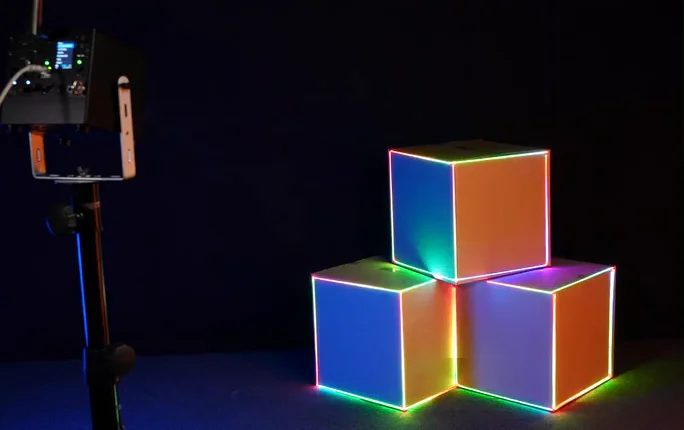
Ways to map
- Draw (lessons 2 and 3): with the laser on, the cube shows each stroke as you draw it, so you trace the object’s edges by watching the projection. The manual calls it the simplest way to map an object. It’s in LaserOS on a computer and on the phone.
- Beam Creator (lesson 4): each edge gets its own line, and each line can have its own effects, for example growing along the edge. It takes longer than Draw.
- MadMapper: for more advanced mapping, the LaserCube also works with MadMapper, one of the third‑party programs that run with the cube in LaserOS control mode. This course doesn’t cover it.
Set up within the manual’s rules
- Aim the cube at the object and lock it in place with the cube switched off and the key out. Then set the beam block as in Start here, lesson 8, so no beam can reach an audience area.
- The object stands in a restricted area: a place where nobody may be. Every beam has to end there, not be reflected away. Keep at least 3 m (10 ft) between the restricted area and any place people may be, on all sides.
- Wherever people may be, every beam stays at least 3 m (10 ft) above the floor, measured from the highest place someone could stand.
- Beams must end on something solid that doesn’t reflect and doesn’t burn. Never map mirrors, windows or glass, chrome, glossy panels or mirror balls, trees and bushes, or roads, cars and other vehicles, and never aim into the open sky.
- Don’t stand in front of the cube while it’s on: work from beside or behind it, and wear laser safety glasses while rigging or otherwise working with it.
The projection area in LaserOS
In LaserOS, Settings → Projector Setup → Image sets the size and position of the whole picture: Zoom X and Y, Position X and Y, Rotate, Flip X and Y, and the keystone corners. In the phone app, tap the gear at the top right, then Image Setup on the Projector Setup page. The Test Pattern list at the top of Projector Setup has a Square that shows the whole projection area. The beam block and the 3 m rule apply whatever the picture’s size and position.
Check yourself
Three set‑ups. Is it OK to go ahead? Decide, then read why.
Three white boxes stand at the back of a stage that’s closed to everyone during the show, more than 3 m from the nearest guest. The cube stands on the same stage, the beam block is set, and every beam ends on the boxes or on the brick wall behind them.
The cube and the boxes are in a restricted area with a 3 m buffer, so no beam passes where people may be; every beam ends on a solid surface there, and the beam block is set.
Where do the beams end, and how far is that from people?
At a product launch, the client wants the outline of a new car drawn in laser lines.
Never aim the laser at cars or other vehicles. The cube’s own label says so too.
Check the list of things a beam must never be aimed at.
The sign you want to outline is polished chrome, so the lines would look extra bright on it.
Chrome reflects the beams. Every beam has to end, not be reflected away, and reflected light can injure eyes too.
What happens to a beam that hits a shiny surface?
In the manual: Draw and simple mapping·Hardware installation·Safety guidelines·Image settings in LaserOS
Lesson complete. On to lesson 2.
Completed
Lesson 2 of 6
Trace an object in Draw
Draw lets you draw lines and shapes for the cube to project. With the laser on, the cube shows each stroke as you draw it, so you can trace the edges of a real object by watching the projection.
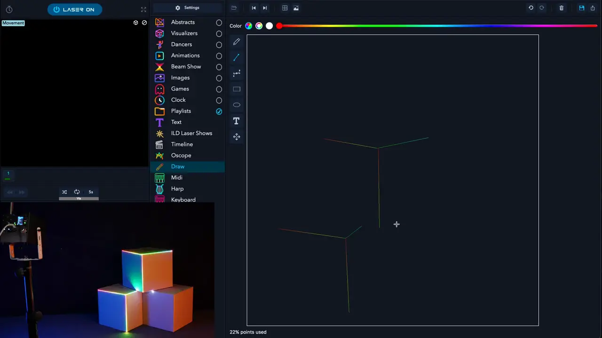
It goes on to effects, Draw on the phone and Beam Creator (lessons 3 to 5), and stops before the video’s last part, on MadMapper, which this course doesn’t cover.
The Laser button
On a computer, the Laser button at the top left shows whether LaserOS can send to a cube:
- NO LASER: LaserOS hasn’t found a cube.
- LASER OFF, with a red power symbol: a cube is found and the laser is off. Click the button to start.
- LASER ON: LaserOS is projecting. Click the button, or press Esc, to stop.
- The cube projects only when it’s armed: interlock closed and key on, and with an E‑Stop connected, the E‑Stop started.
Draw’s tools
- Tools, the icons left of the canvas: freehand, straight line, Bezier curve, rectangle, ellipse, text and move.
- Color: pick a colour above the canvas.
- Points used: how many points the drawing needs, as a percentage. Over 100% the drawing is too complex: simplify it.
- Save: Save Drawing asks for a name and keeps the drawing in Playlists → Drawings.
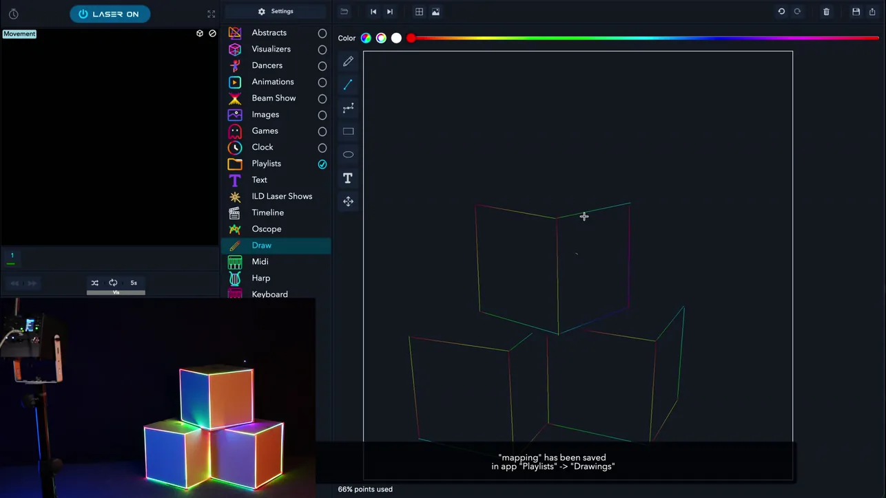
Trace an object, step by step
- Set up as in lesson 1, then start the laser with the Laser button.
- Open Draw and pick the straight‑line tool.
- Draw along each edge of the object while you watch the projection: the cube shows each stroke as you draw it.
- Keep Points used under 100%.
- Save the drawing under a name. It goes to Playlists → Drawings.
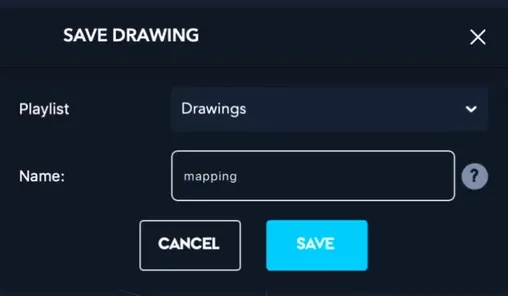
Check yourself
Put the steps for tracing an object in Draw in order.
- Aim the cube with it off and the key out, then set the beam block
- Start the laser with the Laser button in LaserOS
- Draw along each edge while you watch the projection
- Save the drawing under a name
Set up first, with the cube off. Then start the laser, trace each edge while you watch the object, and save: the drawing goes to Playlists → Drawings.
In the manual: Draw and simple mapping·The Laser button·Where your content is saved
Lesson complete. On to lesson 3.
Completed
Lesson 3 of 6
Draw on the phone
The LaserOS phone app has Draw too, with the same tools, so you can map an object from your phone.
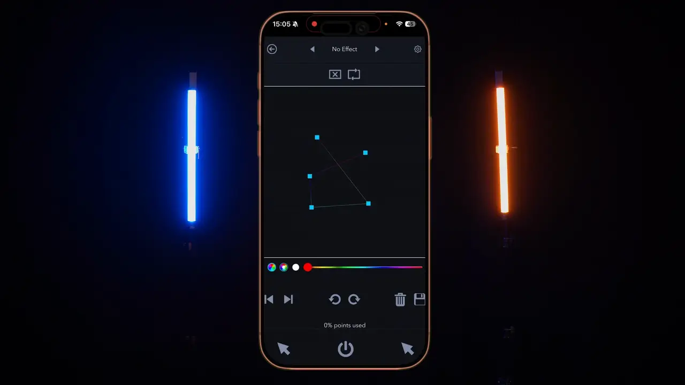
See where a line will start
To see where a line will start, hold one of the arrow buttons (at the bottom of the Draw screen, either side of the power button) and slide a finger over the canvas: a dot on your object shows the spot. Let go of the arrow, then draw.
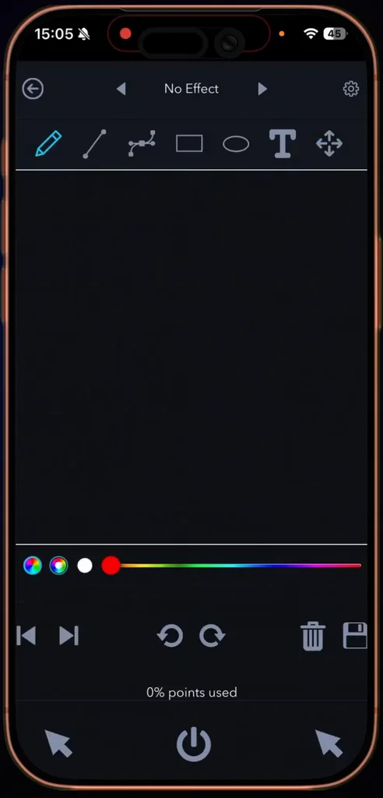
Around the phone app
- The power button is in the middle of the bottom bar: red when the projection is off, blue when it’s on.
- Draw on the phone has the same tools and colours, a Points used counter and a save button. Your drawings are kept in Playlists → Drawings.
- A playlist made on the phone plays from the phone. To put a playlist on the cube’s SD card, you need LaserOS on a computer.
Check yourself
Put the steps for seeing where a line will start in order.
- Hold one of the arrow buttons
- Slide a finger over the canvas
- Find the dot on your object
- Let go of the arrow, then draw
While you hold an arrow, your finger on the canvas moves a dot on the object. Let go of the arrow, then draw from that spot.
In the manual: Drawing on the phone·The Laser button·Adding to a playlist
Lesson complete. On to lesson 4.
Completed
Lesson 4 of 6
Lines along the edges in Beam Creator
Mapping with Beam Creator takes longer than with Draw, but each line can have its own effects: a line can grow along its edge and change colour. This lesson follows the manual’s example, the edges of a stack of boxes.
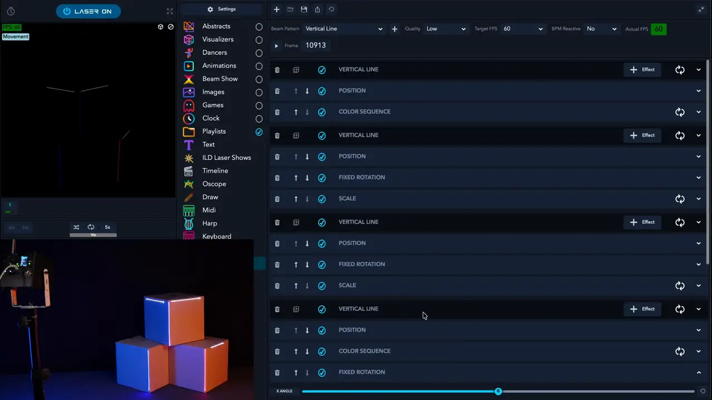
Beam Creator in short
- Open Beam Creator in LaserOS on a computer. Pick a pattern under Beam Pattern and click the + next to it. Each pattern you add is a layer.
- Each layer has buttons to delete it, duplicate it and switch it on or off, and + Effect to add effects. The effects on a layer can be moved up or down and switched off.
- A Vertical Line has Num Sections, Width, Brightness, Line Border and the line’s colour. Leave Brightness at 1: above 1 it draws the line several times over, which is harder for the cube and may flicker.
- With the laser on, the cube projects your design as you build it, so you can match each line to its edge.
- To set a value exactly, right‑click the slider and type it.
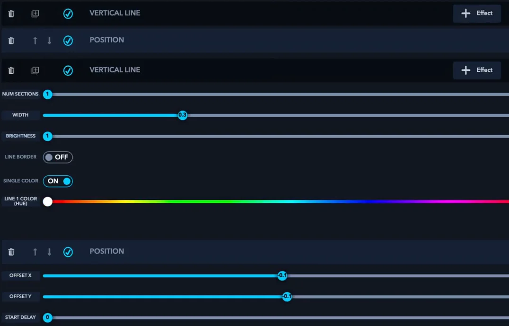
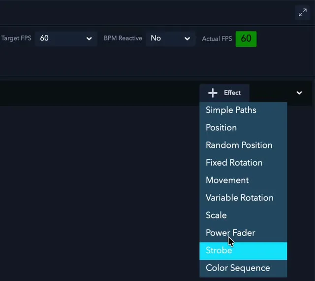
Four effects for an edge
- Position: Offset X and Y place the line.
- Fixed Rotation: turns it to a fixed angle (X, Y and Z angle), to match the edge.
- Scale: grows or shrinks it, for example from 0.0 to 1.0.
- Color Sequence: steps through a number of colours.
The manual’s example: box edges
- Add a Vertical Line.
- Place it on an edge with Position, and turn it to the edge’s angle with Fixed Rotation.
- Add Scale (Scale start->end, from 0.0 to 1.0) so the line grows along the edge, and Color Sequence to change its colours.
- Duplicate the line for the next edge and adjust it. The duplicate button copies a layer with all its effects; the copy runs exactly on top of the original until you change it.
- Save it as a custom beam: click the save icon, and Save Custom Beam asks for a name and keeps the design in Playlists → Custom Beams.
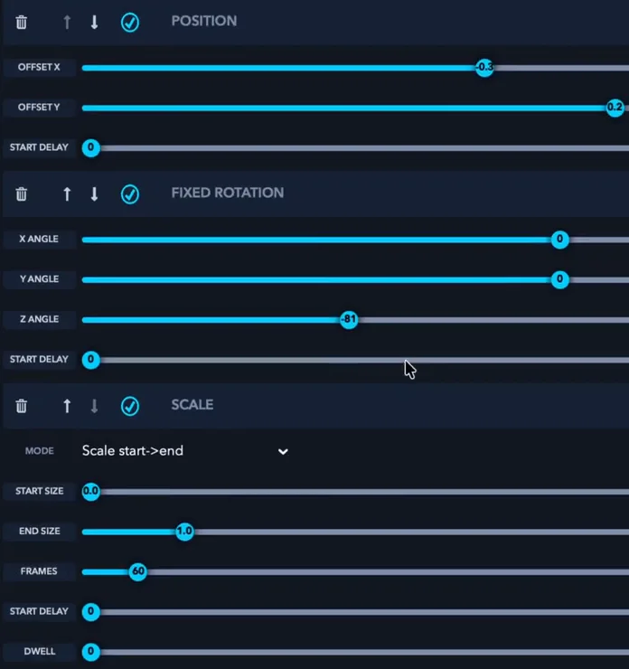
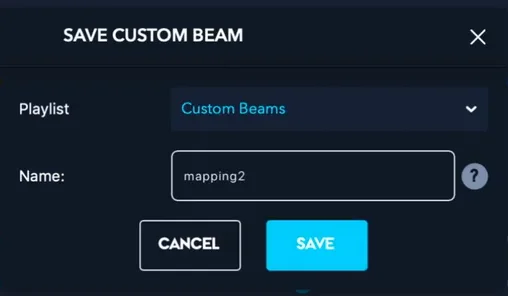
Timing in frames
Beam Creator counts time in frames. Target FPS, at the top, sets how many frames make one second: at the default 60, an effect of 60 frames takes one second and one of 120 frames takes two. Fewer frames make an effect faster, more frames slower. In the video, one line’s Scale runs over 60 frames: one second.
Check yourself
Put the manual’s steps for mapping box edges in order.
- Add a Vertical Line
- Place it with Position and turn it with Fixed Rotation
- Add Scale and Color Sequence
- Duplicate it for the next edge and adjust it
- Save it as a custom beam
One line per edge: place and turn it, make it grow and change colour, duplicate it for the next edge, then save the design as a custom beam.
In the manual: Beam Creator·Beam Creator effects·Timing in frames·Copies and exact values·Example: mapping box edges
Lesson complete. On to lesson 5.
Completed
Lesson 5 of 6
Effects, flicker and render quality
LaserOS’s effects play on top of whatever is showing, your mapping included. But the more detail you add, the more points the scanners have to draw, and too many make it flicker.
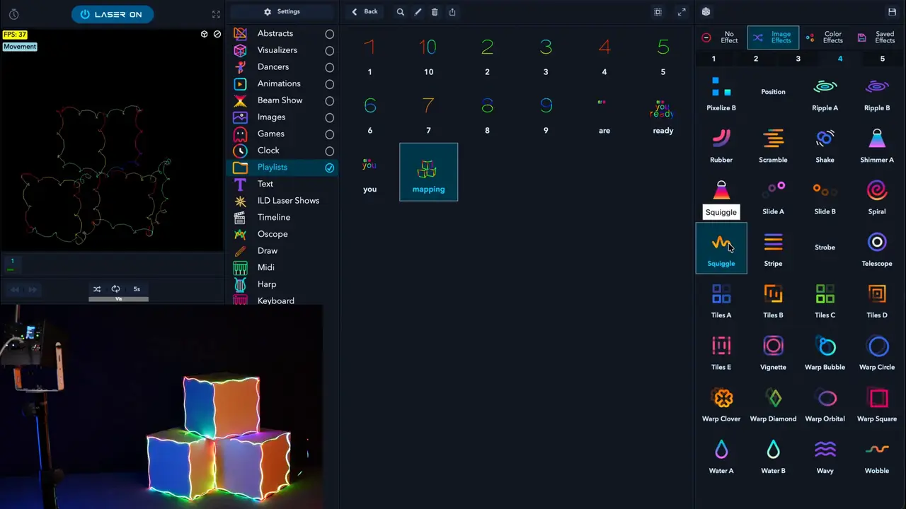
Effects
- On a computer, the effects panel on the right has four tabs: No Effect, Image Effects, Color Effects and Saved Effects. An effect plays on top of whatever is showing: a drawing, a Beam Creator design, an animation or your logo.
- The left panel shows the effect in use, with a button to reset it.
- In the phone app, tap the effect name at the top of the screen (No Effect) and pick one. The arrows next to the name step through the effects.
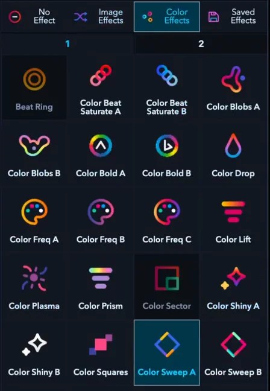
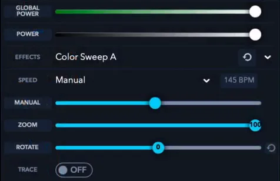
Why mapping can flicker
The scanners can draw only so many points per second. Content with too much detail flickers, or looks distorted with rounded corners. To check, turn on Show FPS in simulator window in Settings → General: 45 FPS or more won’t appear to flicker.
What helps
- Render quality: lower it if the item flickers; raise it if corners look rounded, which can add flicker. On a computer, right‑click the item and turn on Assign Render Quality. In the phone app, tap the gear in the player bar, turn on Assign Quality and move Render Quality.
- Simplify it: in Draw, keep Points used under 100%; in Beam Creator, keep Brightness at 1.
- Make the picture smaller, or split it over more than one cube.
Check yourself
In the manual: LaserOS effects·Flicker and render quality·Render quality on a playlist item
Lesson complete. On to lesson 6.
Completed
Lesson 6 of 6
A zone for the target, then play it
Before the show, put a keep‑within zone around the area you’re mapping. Then play your mapping from a playlist, with Autoplay, or on the Timeline.
A zone works on top of the beam block and the 3 m rule, never instead of them. The laser must never be aimed at people, and a zone doesn’t change that.
A keep‑within zone in LaserOS
In LaserOS control mode, LaserOS handles the safety zone, and the cube greys out its own entries. On a computer, open Settings → Projector Setup and choose Safety Zones in the drop‑down at the top. In the phone app, tap the gear at the top right, then Safety Zone on the Projector Setup page.
- Attenuation Zones switches the zones on. Preview projects their outline.
- Shape: Rectangle, Ellipse, Triangle, Diamond, or one of four corners.
- Invert Zones off: a keep‑within zone with a green outline, and beams outside it are reduced. On: a keep‑out zone with a red outline, and beams inside it are reduced. Where zones overlap, red has priority over green.
- Attenuation: how much the beams are reduced. 100% blanks them completely; 90% leaves 10% of their normal power.
- X and Y place the zone, Width and Height size it. Add makes another zone, Next and Previous choose which one the sliders change, and Remove current deletes it. Import and Export load and save the zone settings.
Use a keep‑within zone for the target area, such as the object you’re mapping, where the beams can safely end. Use a keep‑out zone to keep beams off a camera, a video projector or an object.
Play your mapping
- Your drawings are in Playlists → Drawings, and your Beam Creator designs in Playlists → Custom Beams.
- To add one to your own playlist on a computer, right‑click it and use Add to playlist. In the phone app, touch and hold it, open Add to playlist, pick a playlist (or Create new playlist), then tap Add.
- Autoplay moves from one item to the next by itself. Its buttons are under the preview on a computer and in the bottom bar on the phone: shuffle, repeat and the time per item. Click the time to set it in seconds or beats.
- The Timeline builds a show to a song, with one layer per cube. Drag a custom beam from Playlists onto a layer, under the song’s waveform. The song must be a WAV file: 44.1 kHz, 16‑bit, stereo.
- To play it without a computer: export the playlist to the cube’s SD card with LaserOS on a computer (Control modes, lesson 2), then play it in Playlist mode. There the cube’s own Image Setup and Safety Zone apply, not the ones in LaserOS: set them on the cube before you play.
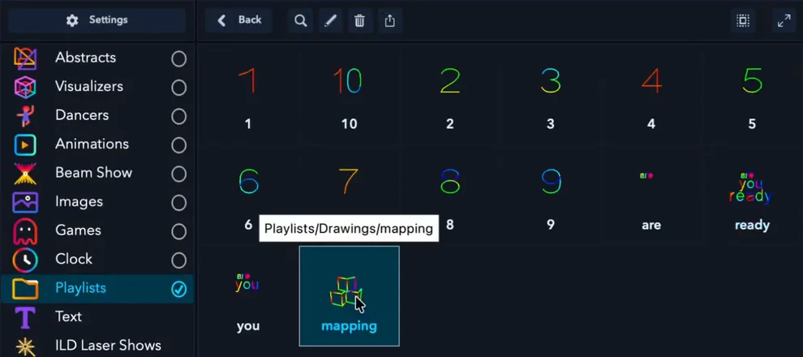
Check yourself
Two situations. Is it OK to go ahead? Decide, then read why.
A friend wants to stand in front of the boxes during the show. You add a keep‑out zone around the spot, so the beams skip them.
Never aim the laser at people. A zone never protects people: it works on top of the beam block and the 3 m rule, never instead of them.
Can a zone make it OK for someone to stand in front of the laser?
The beam block is set, and every beam ends on the boxes or the wall behind them, in a closed‑off area more than 3 m from where guests stand. The cube is in the same closed‑off area. You add a keep‑within zone around the boxes.
That’s what a keep‑within zone is for: the target area where the beams end, on top of the beam block and the 3 m rule.
Is the zone used on top of the other rules, or instead of them?
In the manual: Safety zones in LaserOS·Safety zone on the cube·Adding to a playlist·Autoplay·The Timeline·Playing your content on the cube
Lesson complete. Next: the final quiz.
Final quiz
Final quiz
10 questions picked at random, one from each of the course’s 10 topics. Get 8 right to pass. You can try as many times as you like.
Finish all six lessons first. Still to do:
Certificate
Your certificate
Pass the final quiz to get your certificate. Go to the final quiz
Well done. Type your name as you want it on the certificate.
Your certificate is made right here in your browser. Your name isn’t sent anywhere; it’s only kept in this browser.

Download not starting? Press and hold the certificate (on a computer, right-click it) and save the image.
This is a certificate of completion. It is not a licence, a Laser Safety Officer (LSO) qualification or permission to run public laser shows. Every rule from Start here’s pre‑show checklist applies whenever the laser is on.
Next course: Build a laser show to your music, to make a show to a song for one cube or several. All courses: LaserCube Academy.